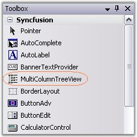
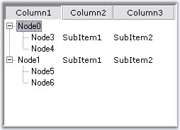

To create a MultiColumnTreeView control, follow the steps that are given below.
1. Open your form in the designer. Add the Syncfusion controls to your VS .NET toolbox if you haven't done so already (the install would have automatically done this unless you selected not to complete toolbox integration during installation).

Figure 1175: MultiColumnTreeView in the Toolbox
2. Drag and drop the MultiColumnTreeView control on to the form.
3. Open the Nodes Collection Editor, add required nodes using Add nodes and Add Child buttons.
4. You can add columns using Columns Editor by clicking add columns button.
5. The Subitems can be added through SubItems Collection Editor available in the Nodes Collection Editor. You can add any number of columns using this collection. Refer Adding Multiple Columns and SubItems.
6. Appearance and behavior related aspects can be controlled by setting the appropriate properties through the property grid of the MultiColumnTreeView control.
7. A simple MultiColumnTreeView with three columns is displayed below.

Figure 1176: SubItems Added to Node3 and Node1
8. Namespace to be added while creating programmatically.
|
[C#]
using Syncfusion.Windows.Forms.Tools.MultiColumnTreeView; |
|
[VB.NET]
Imports Syncfusion.Windows.Forms.Tools.MultiColumnTreeView |
See Also
Adding Multiple Columns and SubItems, Concepts and Features